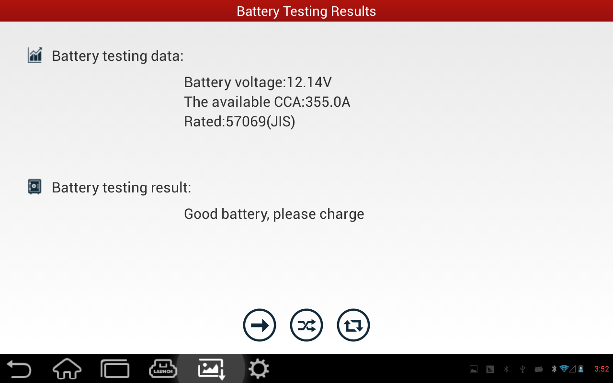
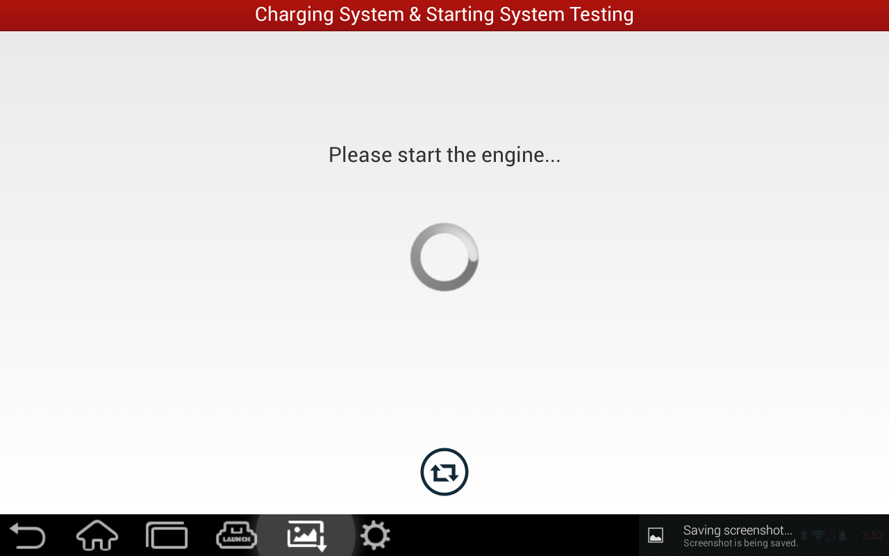

[Previous Page:Main Page] [Next Page:Out-of-Vehicle Test]
In-Vehicle Test further contains below two test methods:
1. Battery Test
This is generally the same as Out-of-Vehicle Test. But for in-vehicle test, all electrical appliances must be turned off before test. Otherwise, the result will not be accurate.
When test starts, firstly check if there's surface charge. If yes, turn on the headlight to discharge it. After discharging, turn off the headlight and go on to the next step.
Users can learn battery's current status, voltage and cold start current from battery test.
|  |
2. Charging and Starting Systems Test
After battery test, click [Next Step] to enter Charging and Starting Systems Test.
Charging and Starting Systems Test can test battery's charging and starting voltages when engine starts and accelerates, and feedback whether the charging and starting statuses are normal.
Charging and Starting Systems Test is not necessary after Battery Test completes. But, Battery Test is a must for Charging and Starting Systems Test.
|  |